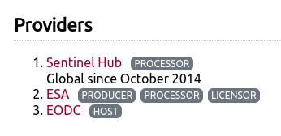

import openeo
openeo.connect('openeofed.dataspace.copernicus.eu').capabilities()Advanced use of federated processing
Federations of openEO backends allow to interact with multiple backends in a transparent manner. It can however help to understand a bit more about the federated nature of the backend to effectively work with a federation.
Note that the capabilities shown here may depend on the federation extension of the openEO API. The open source openEO Aggregator component provides the federated endpoint.
Visual hints in openEO editor
For starters, you may want to know the current members of the federation. The web editor shows this as part of the server info:

and you can get the same information when working in Python or Jupyter notebooks by requesting capabilities:
For processes, you can similarly find out which backends support a given process. This is important, because it determines whether your process graph will work on more than one backend:
connection = openeo.connect('openeofed.dataspace.copernicus.eu')connection.describe_process("add")For collections, the federation uses the ‘summaries’ to indicate which backends host a certain collection:

for collection_id in connection.list_collection_ids():
collection_metadata = connection.describe_collection(collection_id)
federation_backends = collection_metadata["summaries"]["federation:backends"]
print(f"Provided by {repr(federation_backends):16s}: {collection_id} ")Provided by ['cdse'] : SENTINEL3_OLCI_L1B
Provided by ['cdse'] : SENTINEL3_SLSTR
Provided by ['cdse'] : SENTINEL_5P_L2
Provided by ['cdse'] : COPERNICUS_VEGETATION_PHENOLOGY_PRODUCTIVITY_10M_SEASON1
Provided by ['cdse'] : COPERNICUS_VEGETATION_PHENOLOGY_PRODUCTIVITY_10M_SEASON2
Provided by ['cdse'] : ESA_WORLDCOVER_10M_2021_V2
Provided by ['cdse'] : COPERNICUS_VEGETATION_INDICES
Provided by ['cdse'] : SENTINEL2_L1C
Provided by ['cdse'] : SENTINEL2_L2A
Provided by ['cdse'] : SENTINEL1_GRD
Provided by ['cdse'] : COPERNICUS_30
Provided by ['cdse'] : LANDSAT8_L2
Provided by ['cdse'] : SENTINEL3_SYN_L2_SYN
Provided by ['cdse'] : SENTINEL3_SLSTR_L2_LST
Provided by ['cdse'] : SENTINEL1_GLOBAL_MOSAICS
Provided by ['cdse'] : SENTINEL3_OLCI_L2_LAND
Provided by ['cdse'] : SENTINEL3_OLCI_L2_WATER
Provided by ['cdse'] : SENTINEL3_SYN_L2_AOD
Provided by ['terrascope'] : ESA_WORLDCEREAL_ACTIVECROPLAND
Provided by ['terrascope'] : ESA_WORLDCEREAL_IRRIGATION
Provided by ['terrascope'] : ESA_WORLDCEREAL_TEMPORARYCROPS
Provided by ['terrascope'] : ESA_WORLDCEREAL_WINTERCEREALS
Provided by ['terrascope'] : ESA_WORLDCEREAL_MAIZE
Provided by ['terrascope'] : ESA_WORLDCEREAL_SPRINGCEREALS
Provided by ['terrascope'] : CGLS_GDMP300_V1_GLOBAL
Provided by ['terrascope'] : CGLS_GDMP_V2_GLOBAL
Provided by ['terrascope'] : CGLS_LAI300_V1_GLOBAL
Provided by ['terrascope'] : CGLS_FCOVER300_V1_GLOBAL
Provided by ['terrascope'] : CGLS_FAPAR300_V1_GLOBAL
Provided by ['terrascope'] : CGLS_NDVI300_V2_GLOBAL
Provided by ['terrascope'] : SENTINEL3_SYNERGY_VG1
Provided by ['terrascope'] : SENTINEL3_SYNERGY_VG10
Provided by ['terrascope'] : TERRASCOPE_S2_FAPAR_V2
Provided by ['terrascope'] : TERRASCOPE_S2_NDVI_V2
Provided by ['terrascope'] : TERRASCOPE_S2_LAI_V2
Provided by ['terrascope'] : PROBAV_L3_S10_TOC_333M
Provided by ['terrascope'] : PROBAV_L3_S5_TOC_100M
Provided by ['terrascope'] : PROBAV_L3_S1_TOC_100M
Provided by ['terrascope'] : PROBAV_L3_S1_TOC_333M
Provided by ['terrascope'] : TERRASCOPE_S5P_L3_NO2_TD
Provided by ['terrascope'] : TERRASCOPE_S5P_L3_NO2_TM
Provided by ['terrascope'] : TERRASCOPE_S5P_L3_NO2_TY
Provided by ['terrascope'] : TERRASCOPE_S5P_L3_CO_TD
Provided by ['terrascope'] : TERRASCOPE_S5P_L3_CO_TM
Provided by ['terrascope'] : TERRASCOPE_S5P_L3_CO_TY
Provided by ['terrascope'] : TERRASCOPE_S5P_L3_HCHO_TD
Provided by ['terrascope'] : TERRASCOPE_S5P_L3_HCHO_TM
Provided by ['terrascope'] : TERRASCOPE_S5P_L3_HCHO_TY
Provided by ['terrascope'] : TERRASCOPE_S5P_L3_CH4_TD
Provided by ['terrascope'] : TERRASCOPE_S5P_L3_CH4_TM
Provided by ['terrascope'] : TERRASCOPE_S5P_L3_CH4_TY
Provided by ['terrascope'] : TERRASCOPE_S5P_L3_NO2_CAMS_TD
Provided by ['terrascope'] : TERRASCOPE_S5P_L3_NO2_CAMS_TM
Provided by ['terrascope'] : TERRASCOPE_S5P_L3_NO2_CAMS_TY
Provided by ['terrascope'] : TERRASCOPE_S5P_L3_NO2_SURFACE_TD
Provided by ['terrascope'] : TERRASCOPE_S5P_L3_NO2_SURFACE_TM
Provided by ['terrascope'] : TERRASCOPE_S5P_L3_NO2_SURFACE_TY
Provided by ['terrascope'] : TERRASCOPE_S5P_L3_SO2CBR_TD
Provided by ['terrascope'] : TERRASCOPE_S5P_L3_SO2CBR_TM
Provided by ['terrascope'] : TERRASCOPE_S5P_L3_SO2CBR_TY
Provided by ['terrascope'] : ESA_WORLDCOVER_10M_2020_V1
Provided by ['terrascope'] : CGLS_NDVI_LTS_V2_GLOBAL
Provided by ['terrascope'] : CGLS_NDVI_LTS_V3_GLOBAL
Provided by ['terrascope'] : CGLS_SSM_V1_EUROPE
Provided by ['terrascope'] : CGLS_FAPAR_V2_GLOBAL
Provided by ['terrascope'] : CGLS_LAI_V2_GLOBAL
Provided by ['terrascope'] : CGLS_FCOVER_V2_GLOBAL
Provided by ['terrascope'] : CGLS_NDVI300_V1_GLOBAL
Provided by ['terrascope'] : CGLS_NDVI_V3_GLOBAL
Provided by ['terrascope'] : CGLS_NDVI_V2_GLOBAL
Provided by ['terrascope'] : CGLS_SWI_V1_EUROPE
Provided by ['terrascope'] : AGERA5 temporal_extent = "2024-08"
spatial_extent = {"west": 5.07, "south": 51.21, "east": 5.10, "north": 51.23}Indicating use of a specific backend
As collections can be offered on multiple backends, your batch job can end up on multiple backends based on a logic that is internal to the specific federation configuration.
This can have a few drawbacks:
- Job results might differ slightly between backends
- Cost and performance might differ
To avoid this, you can be explicit about which backend to use for a given ‘load_collection’ call, by using the property filtering mechanism:
connection = connection.authenticate_oidc()Authenticated using refresh token.from openeo import collection_property
terrascope_job = (
connection.load_collection(
"ESA_WORLDCEREAL_ACTIVECROPLAND",
properties=[collection_property("federation:backends")=="terrascope"]
)
.filter_temporal(extent=temporal_extent)
.filter_bbox(spatial_extent)
).create_job()terrascope_jobFederated processing
Federated processing happens when a single job requires work on multiple backends. The most common trigger for federated processing is when datasets are not available on the same backend.
Thanks to federated processing, you do not need to worry about setting up scripts to move datasets between processing centers. Do know that the data still needs to be moved, which does come at a cost. For larger scale processing, it may still be less costly to perform a bulk transfer of intermediate datasets in an optimized manner.
To keep the demo simple but not too trivial, we’re going to build the following process graph:
(at CDSE) (at Terrascope)
SENTINEL2_L2A TERRASCOPE_S2_NDVI_V2
| |
filter_temporal filter_temporal
| |
filter_spatial filter_spatial
| |
reduce_dimension reduce_dimension
(temporal mean) (temporal mean)
\ /
merge_cubes
|
save_result- two
load_collectionnodes, each one targetting a different backend - basic processing on each collection: spatio-temporal filtering and doing the temporal mean
- merge that together in a single cube
Load and process the SENTINEL2_L2A data (targeting the CDSE backend):
cube1 = (
connection.load_collection(
"SENTINEL2_L2A",
bands=["B02"],
max_cloud_cover=50,
)
.filter_temporal(extent=temporal_extent)
.filter_bbox(spatial_extent)
)
cube1 = cube1.reduce_temporal("mean")Load and process the TERRASCOPE_S2_NDVI_V2 data (targeting Terrascope):
cube2 = (
connection.load_collection(
"TERRASCOPE_S2_NDVI_V2",
bands=["NDVI_10M"]
)
.filter_temporal(extent=temporal_extent)
.filter_bbox(spatial_extent)
)
cube2 = cube2.reduce_temporal("mean")Merge both cubes:
merged = cube1.merge_cubes(cube2)We want the final result in netCDF format:
saved = merged.save_result(format="netCDF")job = saved.create_job(
title="Deep graph splitting demo",
job_options={
"split_strategy": {
"crossbackend": {
"method": "deep"
},
},
},
validate=False,
)
job.job_id'agg-pj-20250619-184509'job.start()As this batch job is federated, it requires doing work on 2 different backends. This involves creating partial jobs, which will also be visible in your job listing:
connection.list_jobs(limit=3)jobWhen the job is finished, you can just get results like with any other job!
job